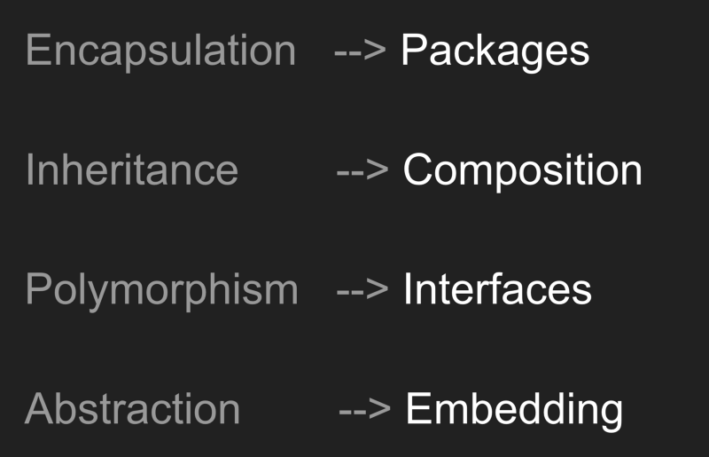

[번역] Go와 OOP
Feb 28, 2017 00:00 · 3083 words · 7 minute read
theamydance의 Go and OOP… Sorta를 번역한 글입니다.
나는 2016년 7월 18일에 Go를 시작했다. 3주 후, 나는 NYC의 Women Who Go 밋업에서 처음으로 기술 토크를 했다. 이 글은 그 토크를 글로 옮긴 글이다. 이 글의 독자는 “클래스 (class)", “구현 (implements)", “추상화 (abstract)“의 키워드를 가진 클래스 기반 언어를 사용했던 사람들을 대상으로 한다. 나는 특별히 Go를 시작하기 전에 PHP로 프로그래밍을 했었다.
0. 용어
먼저 객체 없이도 객체 지향 프로그래밍 원리를 사용할 수 있다는 것을 이해하는 것이 중요하다. “객체"라는 용어는 Go에서는 사용할 수 없는 많은 의미들을 함축하고 있다.
Go는 전통적인 OOP 언어들이 객체를 가지고 있는 반면, 값을 가진다. 이 둘의 차이점을 살펴보자.
객체 vs. 값
객체는 클래스의 인터스턴스이다. 객체는 명명된 참조를 통해 접근된다.
<?php
class SomeObject {
public $classVar;
public function __construct( $classVar ) {
$this->classVar = $classVar;
}
}
$object = new SomeObject( "Hello, World." );
$reference = $object;
$reference->classVar = "Look! I can access object!";
echo $object->classVar; // "Look! I can access object!"
echo $reference->classVar; // "Look! I can access object!"
이 PHP 코드는 $object와 $reference가 모두 같은 SomeObject의 인스턴스를 가리키고 있음을 보여준다.
다양한 명명된 참조로부터 접근할 수 있는 것 외에도, 객체는 Go에서는 불가능한 상속과 서브클래스와 같은 중요한 개념 또한 포함한다. 따라서, Go를 배울 때에는, 객체에 대한 생각을 버리고, 올바른 용어를 사용하는데 집중을 하는게 가장 좋다.
값은 정확히 바로 그 값이다. 예를 들어, 구조체는 값이다. 구조체의 각 인스턴스는 전달될 때 복사된다.
package main
import ("fmt")
type SomeStruct struct {
Field string
}
func main() {
value := SomeStruct{Field: "Structs are values"}
copy := value
copy.Field = "This is a Copy & doesn't change the variable value"
fmt.Println(value.Field) // "Structs are values"
fmt.Println(copy.Field) // "This is a Copy & doesn't change the variable value"
}
위 예제에서, copy.Field에 값을 할당할 때, value.Field는 값을 변경하지 않는다는걸 볼 수 있다. 같은 인스턴스를 참조하고 싶을 땐, C와 유사하게, 명시적으로 그렇게 할 수 있는 포인터를 사용한다.
타입과 메서드 집합
이제 Go에 객체가 없는 이유를 알았으므로, 타입의 인스턴스, 특히 구조체 타입을 어떻게 조작하는지 살펴보자.
타입은 메서드 집합과 관련이 있다. 메서드 집합의 각 메서드는 주어진 리시버 (receiver) 위에서 동작한다.
type SomeStruct struct {
Field string
}
// foo는 SomeStruct의 메서드 집합에 속함
// (s *SomeStruct)는 SomeStruct 포인터에 대한 리시버이다
func (s *SomeStruct) foo(field string) {
s.Field = field
}
func main() {
someStruct := new(SomeStruct)
someStruct.foo("a")
fmt.Println(someStruct.Field) // "a"
someStruct.foo("b")
fmt.Println(someStruct.Field) // "b"
}
여기서 우리는 foo 메서드가 someStruct의 동일한 인스턴스에서 동작하고 이의 Field 값을 변경한다는 것을 알 수 있다.
이제 용어를 알아봤으므로, 마침내 우리는 Go 코드를 해석하는데 사용할 수 있는 OOP 패턴들을 살펴볼 수 있다.
1. 캡슐화 (Encapsulation)
전통적으로, 클래스 기반 OOP에서는 캡슐화가 private과 public 변수/메서드를 통해 이루어졌다. Go에서는 패키지 (package) 수준에서 캡슐화가 이루어진다.
“Public” 요소는 패키지 밖으로 노출될 수 있으며 첫 문자를 대문자로 표시한다. 노출 (exported) vs. 비노출 (unexported) 요소가 더 정확한 용어이기 때문에 public을 따옴표 안에 적었다. 비노출 요소는 첫 문자로 소문자를 사용해 표시하며, 해당 패키지 내에서만 접근이 가능하다.
package encapsulation
import "fmt"
// Encapsulation 구조체는 이 패키지 밖으로 노출될 수 있음
type Encapsulation struct{}
// Expose 메서드는 패키지 밖을 노출될 수 있음
func (e *Encapsulation) Expose() {
fmt.Println("AHHHH! I'm exposed!")
}
// hide 메서드는 패키지 내부에서만 사용할 수 있음
func (e *Encapsulation) hide() {
fmt.Println("Shhhh... this is super secret")
}
// Unhide는 노출되지 않은 hide 메서드를 사용함
func (e *Encapsulation) Unhide() {
e.hide()
fmt.Println("...jk")
}
encapsulation 패키지에서, Encapsulation (구조체), Expose (메서드) *Unhide (메서드)*는 모두 노출되어 있으며 타 패키지에서 사용될 수 있다.
package main
import "github.com/amy/tech-talk/encapsulation"
func main() {
e := encapsulation.Encapsulation{}
e.Expose() // "AHHHH! I'm exposed!"
// e.hide() // 주석을 없애면, 다음의 에러가 발생함
// ./main.go:10: e.hide undefined (cannot refer
// to unexported field or method encapsulation.
// (*Encapsulation)."".hide)
e.Unhide() // "Shhhh... this is super secret"
// "...jk"
}
여기서 우리는 encapsulation 패키지와 노출 가능한 요소들을 main 패키지에서 가져와 사용했다. hide 메서드를 사용하려고하면 컴파일러는 에러를 발생시킨다.
2. 다형성 (Polymorphism)
Go에서는 인터페이스가 암시적으로 충족된다. 인터페이스 또한 타입이다. 이 두 문장은 많은 의미를 담고 있으므로, 이제 이를 자세히 알아보자.
인터페이스가 암시적으로 충족된다 → 인터페이스의 모든 메서드가 어떤 타입의 메서드 집합에 모두 포함되어 있을 경우 해당 타입은 인터페이스를 만족한다. Go에는 implements 키워드가 없다.
인터페이스는 타입이다 → 어떤 타입이 한 인터페이스를 만족하면, 그 타입은 또한 타입이 만족하는 인터페이스에 의해 제한되는 모든 타입을 만족한다.
package polymorphism
import "fmt"
type SloganSayer interface {
Slogan()
}
// SaySlogan은 SloganSayer 타입을 파라미터로 받음
func SaySlogan(sloganSayer SloganSayer) {
sloganSayer.Slogan()
}
// Hillary는 Slogan 함수를 구현함으로써 암묵적으로 SloganSayer 인터페이스를 만족
// 따라서, Hillary도 SloganSayer 타입이다
type Hillary struct{}
func (h *Hillary) Slogan() {
fmt.Println("Stronger together.")
}
// Trump에 대해서도 동일하게 적용됨
type Trump struct{}
func (t *Trump) Slogan() {
fmt.Println("Make America great again.")
}
여기서 주의 깊게 볼건 SaySlogan 함수는 파라미터를 SloganSayer 타입으로 제한할 수 있다는 것이다. 따라서, 해당 인터페이스를 만족하는 모든 타입이 파라미터로 사용될 수 있다.
package main
import "github.com/amy/tech-talk/polymorphism"
func main() {
hillary := new(polymorphism.Hillary)
hillary.Slogan() // "Stronger together."
polymorphism.SaySlogan(hillary) // "Stronger together."
trump := new(polymorphism.Trump)
polymorphism.SaySlogan(trump) // "Make America great again."
}
우리는 대통령 후보가 슬로건을 말하는것에 대해 걱정할 필요가 없다. 타입이 SloganSayer 인터페이스를 구현하는 한, 이를 SaySlogan으로 전달할 수 있다.
3. 컴포지션 (Composition)
Go에서 상속은 불가능하다. 대신, 우리는 **임베딩 (embedding)**을 사용해 조합 가능하고 재사용이 가능한 구조체를 만들 수 있다.
Go는 인터페이스나 구조체 안에 타입을 임베드 할 수 있게 해준다. 임베딩을 통해, 우리는 내부 타입에서 선언된 메서드를 외부 타입으로 전달할 수 있다.
타입을 임베드하면, 해당 타입의 메서드는 외부 타입의 메서드가 되지만, 메서드가 실행될때의 메서드 리시버는 외부 타입이 아니라 내부 타입이다.
package composition
import "fmt"
type Human struct {
FirstName string
LastName string
CanSwim bool
}
// Amy는 Human 타입으로 임베딩 되어있으며 따라서 Human의 메서드 집합에 속하는 메서드를 실행할 수 있음
type Amy struct {
Human
}
// Alan 또한 Human 타입으로 임베딩 되어있음
type Alan struct {
Human
}
func (h *Human) Name() {
fmt.Printf("Hello! My name is %v %v", h.FirstName, h.LastName)
}
func (h *Human) Swim() {
if h.CanSwim == true {
fmt.Println("I can swim!")
} else {
fmt.Println("I can not swim.")
}
}
여러분은 “상속보단 컴포지션“이라는 말을 종종 들어봤을 것이다.
package main
import "github.com/amy/tech-talk/composition"
func main() {
// amy는 Human 타입으로 구성됨
amy := composition.Amy{
Human: composition.Human{
FirstName: "Amy",
LastName: "Chen",
CanSwim: true,
},
}
// alan은 Human 타입으로 구성됨
alan:= composition.Alan{
Human: composition.Human{
FirstName: "Alan",
LastName: "Chen",
CanSwim: false,
},
}
// Human의 메서드 집합은 Amy 타입으로 전달됨
amy.Name() // "Hello! My name is Amy Chen"
amy.CanSwim() // "I can swim!"
alan.Name() // "Hello! My name is Alan Chen"
alan.CanSwim() // "I can't swim"
}
4. 추상화 (Abstraction)
구조체 내에 구조체를 임베딩 하는것과 유사하게, 구조체 내에 인터페이스를 임베딩할 수도 있다. 한 인터페이스를 만족하는 모든 타입들은 또한 해당 인터페이스 타입을 갖는다는걸 기억하라.
package abstraction
import "fmt"
type SloganSayer interface {
Slogan()
}
// Campaign은 자기 자신의 인스턴스에서 SloganSayer를 받을 수 있음
// Campaign은 또한 SloganSayer 인터페이스를 구현하고 있으므로 SloganSayer이기도 함
// 이는 체이닝시 유용하다
type Campaign struct{
SloganSayer
}
// SaySlogan은 파라미터로 Campaign 또한 받을 수 있음
func SaySlogan(s SloganSayer) {
s.Slogan()
}
// Hillary는 SloganSayer 인터페이스를 구현함
// Hillary는 SloganSayer임
type Hillary struct{}
func (h *Hillary) Slogan() {
fmt.Println("Stronger together.")
}
// Trump는 SloganSayer 인터페이스를 구현함
// Trump는 SloganSayer임
type Trump struct{}
func (t *Trump) Slogan() {
fmt.Println("Make American great again.")
}
인터페이스 임베딩의 유용함은 이게 사용되는것을 볼 때 더욱 분명해진다.
package main
import "github.com/amy/tech-talk/abstraction"
func main() {
hillary := new(abstraction.Hillary)
trump := new(abstraction.Trump)
h := abstraction.Campaign{hillary}
t := abstraction.Campaign{trump}
// Slogan의 Hillary와 Trump 구현체는 추상화 되어있다
// 대신, Campaign은 단지 이게 SloganSayer이고 따라서 Slogan을 호출할 수 있음을 알고있음
h.Slogan() // "Stronger together."
t.Slogan() // "Make America great again."
// SloganSayer를 SaySlogan의 파라미터로 주입할 수 있음
abstraction.SaySlogan(hillary) // "Stronger together."
abstraction.SaySlogan(trump) // "Make America great again."
// h와 t는 또한 Campaign 타입이라는걸 기억하라
abstraction.SaySlogan(h) // "Stronger together."
abstraction.SaySlogan(t) // "Make America great again."
}
이게 끝이다! 이제 여러분은 기존에 익숙했던 OOP 원리들을 어떻게 빌릴 수 있는지 알았으니, 모듈화를 시작해보라. 다음은 OOP 원칙이 Go에서 어떻게 바뀌는지를 요약한 것이다.
